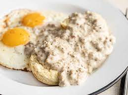

Bisuits & Gravy

Description
If you don’t live in the south, you might have never tried this classic southern breakfast dish, and believe me when I say you’re missing out. Sausage gravy is rich, comforting, inexpensive, and surprisingly easy to make from scratch. So you don’t have to wait 45 minutes in line at your favorite brunch spot to get some good biscuits and gravy. Let me show you how to do it at home for way less time and way less money.
List of Ingredients
- 1/2 lb. pork sausage
- 1.5 Tbsp butter
- 2 Tbsp all-purpose flour
- 2 cups whole milk
- 1/8 tsp garlic powder
- 1/8 tsp freshly cracked black pepper
- 1/8 tsp crushed red pepper (optional)
- 1/8 tsp salt
Steps
- Add the pork sausage to a skillet and cook over medium heat, breaking it into chunks as you stir, until it is cooked through. Do not drain the fat from the skillet.
- Add the butter and flour to the skillet with the pork. Continue to stir and cook for about 2 minutes more.
- Whisk the milk into the skillet, making sure to dissolve all the browned bits off the bottom of the skillet as you whisk. Continue to stir and cook until the milk begins to simmer lightly, at which point it will thicken into a nice gravy (5 minutes).
- Season the gravy with red pepper, freshly cracked black pepper, garlic powder, and salt. Serve over biscuits or your favorite starchy breakfast item.